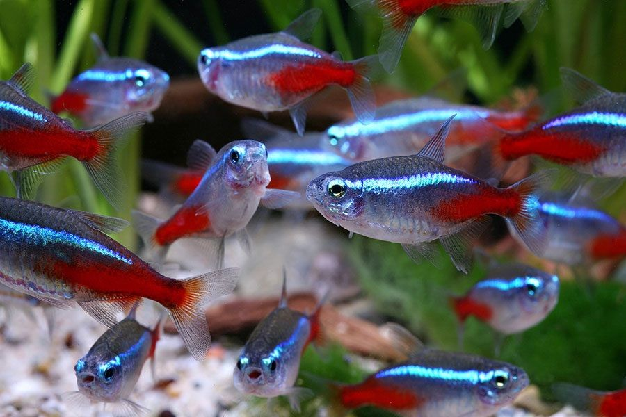

Ikan Neon Tetra
Ikan Neon Tetra berasal dari Amerika Latin, tepatnya di Sungai Amazon. Ikan ini memiliki variasi warna biru terang dan putih perak yang menghiasi tubuhnya yang kecil. Ikan ini lebih menarik dipelihara dalam jumlah yang banyak karena sifatnya yang berkoloni atau membentuk gerombolan.
Ikan neon tetra merupakan ikan yang bersifat omnivora. Selain itu, jenis ikan ini memiliki beberapa keluarga termasuk neon tetra albino, black neon, neon blue eyes dan fire neon.
Perawatan
Beli akuarium berukuran besar. Neon tetra membutuhkan akuarium berkapasitas minimal 40 liter air tawar. Ini akan memberi cukup ruang bagi ikan untuk bersembunyi dan berenang. Siapkan akuarium yang dapat menampung minimal 40 liter untuk setiap 24 ekor ikan yang ingin dipelihara. Lakukan proses cycling tanpa ikan. Disarankan untuk melakukan proses ini beberapa minggu sebelum membeli ikan. Proses ini akan membersihkan akuarium dan menyingkirkan bakteri berbahaya yang dapat membunuh ikan. Beli kit uji air di toko hewan lokal. Pastikan air tidak mengandung amonia (NH3), nitrit (NO2-), dan nitrat (NO3-) sebelum memasukkan ikan
Tutup saluran filter tempat air masuk. Neon tetra adalah ikan kecil yang lembut, tubuhnya bisa terisap ke dalam filter dan tewas. Gunakan kawat nyamuk atau busa untuk menutup saluran masuk air pada filter. Langkah ini akan melindungi ikan dan memungkinkan filter mengatur populasi bakteri di dalam air. Tambahkan bahan organik. Di lingkungan alaminya, neon tetra terbiasa hidup di air dengan banyak tanaman. Tambahkan tanaman akuatik atau semiakuatik ke dalam akuarium (biasanya dijual di toko hewan). Anda juga bisa menambahkan dedaunan dan kayu apung untuk menciptakan lingkungan yang mirip dengan habitat alami ikan
Pantau pH air. Neon tetra lebih menyukai kondisi air yang sedikit asam, dengan pH antara 5,5-6,8. Belilah kertas lakmus untuk menguji pH di toko hewan. Ikuti instruksi pada label untuk membaca hasil uji dengan benar. Sebaiknya, lakukan uji pH setiap kali Anda mengganti air. Buatlah kantong gambut untuk menurunkan pH jika perlu. Belilah stoking nilon dan sekantong gambut organik (sphagnum) dari toko berkebun. Setelah mencuci tangan, isi bagian kaki stoking dengan gambut. Ikat stoking setelah Anda selesai mengisinya dengan gambut dan potong bagian kaki stoking. Masukkan kantong ke dalam air dan remas perlahan untuk mengeluarkan air yang telah melewati filter gambut. Kemudian, tinggalkan kantong di dalam akuarium. Gantilah setiap beberapa bulan dengan kantong baru
Redupkan cahaya. Di alam bebas, ikan tetra hidup di air yang gelap. Pilih lokasi yang relatif gelap di rumah Anda untuk meletakkan akuarium. Beli bola lampu dengan intensitas rendah untuk menciptakan efek cahaya yang redup. Tanaman dan tempat persembunyian lainnya juga dapat membantu menciptakan area gelap di dalam akuarium Aturlah suhu. Secara umum, akuarium harus memiliki suhu antara 21–27 °C. Beli pemanas akuarium yang bisa disetel (bisa dibeli di kebanyakan toko hewan). Untuk memantau suhu, belilah termometer akuarium
Reproduksi
Misi pembiakan ikan neon tetra mungkin bukan perkara mudah, sebab parameter airnya mesti diatur dulu. Siapkan akuarium terpisah dengan air yang lebih lunak dan ukuran pH sekitar 5,0-6,0. Kapasitas akuariumnya juga tak perlu terlalu besar, cukup 10 literan untuk 1 pasang dan sekitar 20 liter untuk beberapa pasang ikan. Siapkan semprotan yang bisa mendatangkan aliran kecil di akuarium pemijahan, lalu jangan lupa untuk menutupnya. Sebab, ikan bisa jadi akan melompat ke luar. Kurangi cahaya yang masuk ke dalam akuarium dengan menutup dinding sampingnya menggunakan kertas. Usahakan suhu airnya 25 derajat Celcius. Untuk tanamannya sendiri, anda bisa menggunakan lumut agar ikan betina bisa nyaman bertelur di sana.
Pasangan ikan mesti disuapi dengan pakan hidup. Ketika mereka menghuni aquarium khusus pemijahan, semestinya tidak ada cahaya sama-sekali. Anda bisa mengaturnya di malam hari, sebab pemijahan sendiri akan mulai terlaksana pada pagi buta. Namun ikan jantan akan terus mengganggu atau menghantui betinanya, sehingga sang betina mesti berada tanaman akuatik untuk mengeluarkan sekitar 100-an telur. Sesaat setelah pemijahan, anda mesti mengeluarkan pasangan ikan dari tangki atau akuarium. Pasalnya, mereka bisa memakan telurnya sendiri.
Turunkan ketinggian air hingga 7-10 cm, sampai keadaan jadi benar-benar teduh. Anda juga bisa memasukkannya ke dalam lemari, sebab larva ikan cenerung sensitif terhadap cahaya. Sekitar 4-5 hari kemudian, larva mulai muncul dari telur. Sekitar 3 hari kemudian, benih tersebut akan mulai berenang. Pastikan tidak ada lendir di atas permukaan air, sehingga para juvenile atau ikan-ikan muda itu bisa menghirup udara dengan leluasa, serta mengisi kandung kemih berenangnya. Pakan mereka, seperti kuning telur dan infusorian, mesti berukuran kecil saja. Tambahkan air secara bertahap. Lalu, hindari penggunaan filter apapun, sebab ikan-ikan tersebut masih sangat kecil dan rentan mati di dalamnya.